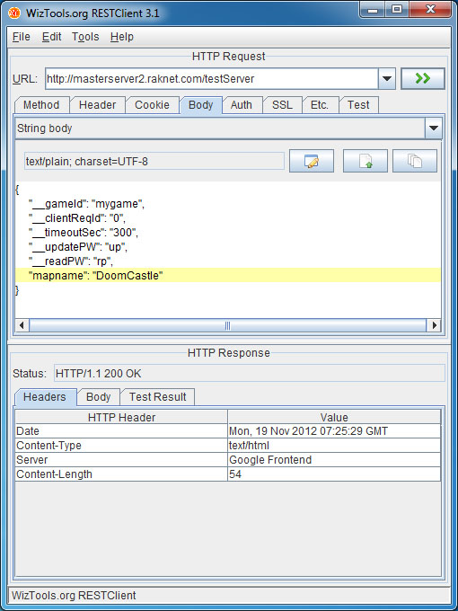
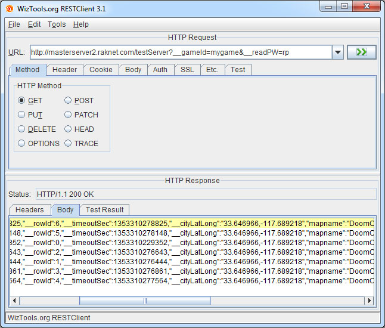

Because MasterServer2 is a hosted service using standard protocols, you can use it immediately with no setup or download. It can work on any operating system or language that supports sockets. You don't even need to use RakNet (although it makes it easier).
The public test server URI for HTTP operations is:
http://masterserver2.raknet.com/testServer
See the bottom of this document for sample code to integrate with C and C++.
|  |  |
Request body:
{
"__gameId": "mygame",
"__clientReqId": "0",
"__timeoutSec": "300",
"__updatePW": "up",
"__readPW": "rp",
"mapname": "DoomCastle",
"gameport": "60000"
}
Response JSON:
{"POST":
{"__rowId":0,"__clientReqId":"0","__gameId":"mygame"}
}
__geoIP
Optional: Yes
Default: Whatever IP you connected to the server with (See __addr)
This parameter allows you to override what IP address is used for Geographic lookup. You will get more accurate results if you do a traceroute to your ISP, and pass that IP address with __geoIP, rather than letting the system determine your IP automatically.
__gameId
Optional: Depends on server setting. Not optional on public server.
Default: If optional, defaults to an unnamed game.
This is a unique identifier for your game, of your choosing. If __gameId is unknown, the server will either create it or fail, depending on the server setting. On the public server, the server will create it. You may specify passwords for this game on creation with the control fields __updatePW and __readPW.
__updatePW
Optional: Yes
Default: Empty string / no password.
This password is used for POST, PUT, and DELETE operations. If specified when the a new game is created, this field specifies what password to set for future requests.
__readPW
Optional: Yes
Default: Empty string / no password.
This password is used for the GET operation. If specified when the a new game is created, this field specifies what password to set for future requests.
__clientReqId
Optional: Yes
Default: NIL.
The intent of __clientReqId is if you have multiple games on the same computer, you can choose which game to update or delete on a subsequent request. On success, the value passed to __clientReqId is returned to you, along with __gameId and __rowId of the row and game added or updated. While optional, if you do not pass __clientReqId there is no way to know what __rowId was assigned to your game, so no way to later update or delete the row.
__rowId
Optional: Yes
Default: NIL.
If specified, a row with this ID will be overwritten, instead of creating a new row. After uploading a row the first time, you should use this __rowId on subsequent POST / PUT requests for the same game.
__rowPW
Optional: Yes
Default: NIL.
If __rowPW was specified when the row was created, you must also specify this value to update the row when using __rowId. The purpose of this value is to prevent players of other games from updating your own row. If a row required a password but it was not specified, or the password was wrong, error code 401 will be returned.
400 Bad Request
Reasons:
* Body of post is empty
* Invalid JSON format
* Field was specified but empty
* Unknown __gameId, or was required but not found
* Cannot convert fields to required type, for example __timeoutSec: "notANumber" or a bad IP address for __geoIP
401 Unauthorized
Reasons:
* Incorrect or missing game password
* Incorrect or missing row password, when using __rowId
403 Forbidden
Reasons:
* Body of post is empty
* __timeoutSec is less than 15 seocnds, or greater than 300 seconds.
* More than 10 entries posted from a single IP address. This limit is to reduce the effect of a malicious client flooding the database with bad entries. For example, if you set __timeoutSec with 15 seconds, a single IP address could post 10 games immediately, and then none at all for 15 seconds. Or 1 game every 1.5 seconds indefinitely.
500 Internal server error
Reasons:
* Unknown internal error
Request URI:
http://masterserver2.raknet.com/testServer?__gameId=mygame&__readPW=rpActual TCP data sent to masterserver2.raknet.com:
GET /testServer?__gameId=mygame&__readPW=rp HTTP/1.1 Host: masterserver2.raknet.com Connection: Keep-AliveResponse JSON, with no rows returned:
{ "GET":
[ ],
"requestURL": "http://masterserver2.raknet.com/testServer?__gameId=mygame&__readPW=rp"
}
Actual TCP data received, with no rows returned:
HTTP/1.1 200 OK
Date: Thu, 22 Nov 2012 05:59:38 GMT
Content-Type: text/html
Server: Google Frontend
Content-Length: 17
{ "GET":
[ ] ,
"requestURL": "http://masterserver2.raknet.com/testServer?__gameId=mygame&__readPW=rp"
}
Response JSON, with one row returned:
{ "GET": [
{"__rowId":0,"__timeoutSec":300,"mapname":"DoomCastle","__addr":"127.0.0.1","gameport":"60000","__gameId":"mygame"}
],
"requestURL": "http://masterserver2.raknet.com/testServer?__gameId=mygame&__readPW=rp" }
Reposne JSON, with three rows returned
{ "GET": [
{"__rowId":0,"__timeoutSec":300,"mapname":"DoomCastle","__addr":"127.0.0.1","gameport":"60000","__gameId":"mygame"}
{"__rowId":2,"__timeoutSec":300,"mapname":"DoomCastle","__addr":"127.0.0.1","gameport":"60000","__gameId":"mygame"}
{"__rowId":1,"__timeoutSec":300,"mapname":"DoomCastle","__addr":"127.0.0.1","gameport":"60000","__gameId":"mygame"}
],
"requestURL": "http://masterserver2.raknet.com/testServer?__gameId=mygame&__readPW=rp"
}
__readPW
Optional: Yes
Default: Empty string / no password.
The password to use, if a password was required for this operation.
__geoIP
Optional: Yes
Default: Whatever IP you connected to the server with (See __addr)
This parameter allows you to override what IP address is used for Geographic lookup. You will get more accurate results if you do a traceroute to your ISP, and pass that IP address with __geoIP, rather than letting the system determine your IP automatically.
__minResultsHint
Optional: Yes
Default: 200
Minimum: 10
Maximum: 500
The minimum number of results you would like to get back. Fewer results requires less load and bandwidth on the server. If there are not this many results available, all results will be returned.
__includeDist
Optional: Yes
Default: Not included
If __includeDist is included in the GET URL, then __dist will be returned with the results. This is the distance squared between your approximate position and that of the server.
__includeDistSq
Optional: Yes
Default: Not included
If __includeDistSq is included in the GET URL, then __distSq will be returned with the results. This is the distance squared between your approximate position and that of the server.
__excludeCols
Optional: Yes
Default: Not included
Specify __excludeCols to not include named columns, to save bandwidth and thereby return more results. __excludeCols=__rowId,__city,__cityLon,__cityLat,__timeoutSec,__geoIP,__gameId would discard all automatic results
__addr
Optional: No
IP address that uploaded this row.
__city
Optional: Yes. If server cannot do lookup, will not be present.
Estimated city from GeoIP lookup, using __addr unless __geoIP was specified instead.
__cityLat
Optional: Yes. If server cannot do lookup, will not be present.
Estimated lattitude from GeoIP lookup, using __addr unless __geoIP was specified instead.
__cityLon
Optional: Yes. If server cannot do lookup, will not be present.
Estimated longitude from GeoIP lookup, using __addr unless __geoIP was specified instead.
__rowId
Optional: No
Unique row ID for this game. Used for DELETE request to delete a row, and POST/PUT to update a row.
400 Bad Request
Reasons:
* Unknown __gameId, or was required but not found
* Cannot convert fields to required type, for example _rowId or __minResultsHint is not a number
* Field was specified but empty
* __minResultsHint is outside the allowed range
401 Unauthorized
Reasons:
* Bad or missing password
403 Forbidden
Reasons:
* __timeoutSec is outside the range of allowed values
500 Internal server error
Reasons:
* Unknown internal errors
DELETE /testServer?__gameId=mygame&__rowId=0 HTTP/1.1\r\n Content-Length: 0\r\n Host: masterserver2.raknet.com\r\n Connection: Keep-Alive\r\n \r\n
__updatePW
Optional: Yes
Default: Empty string / no password.
The password to use, if a password was required for this operation.
__rowId
Optional: No
Which row to delete.
400 Bad Request
Reasons:
* Unknown __gameId, or was required but not found
* __rowId not specified
* Cannot convert fields to required type, for example _rowId=notANumber
* Field was specified but empty
#include "WinSock2.h"
#include "windows.h"
#include "Ws2tcpip.h"
#include "stdio.h"
void main(void)
{
WSADATA winsockInfo;
WSAStartup( MAKEWORD( 2, 2 ), &winsockInfo );
int sock = socket(AF_INET, SOCK_STREAM, IPPROTO_TCP);
struct sockaddr_in serverAddr;
memset(&serverAddr,0,sizeof(sockaddr_in));
serverAddr.sin_family = AF_INET;
serverAddr.sin_port = 0;
int j = bind(sock,(struct sockaddr *) &serverAddr,sizeof(serverAddr));
struct hostent * phe = gethostbyname( "masterserver2.raknet.com" );
memcpy( &serverAddr.sin_addr.s_addr, phe->h_addr_list[ 0 ], sizeof( struct in_addr ) );
serverAddr.sin_port = htons(80);
connect(sock, (struct sockaddr *) &serverAddr, sizeof(serverAddr));
const char *postRequest =
"POST /testServer HTTP/1.1\r\n"
"Content-Length: 83\r\n"
"Content-Type: text/plain; charset=UTF-8\r\n"
"Host: masterserver2.raknet.com\r\n"
"Connection: Keep-Alive\r\n"
"\r\n"
"{'__gameId': 'myGame','__clientReqId': '0','__timeoutSec': '60','mapname': 'myMap'}\r\n";
send(sock, postRequest, strlen(postRequest), 0);
char outputBuffer[512];
memset(outputBuffer,0,512);
recv(sock, outputBuffer, 512, 0);
printf(outputBuffer);
}
RakNet
#include "TCPInterface.h"
#include "RakString.h"
#include "RakSleep.h"
using namespace RakNet;
void main(void)
{
TCPInterface *tcp = RakNet::OP_NEW(__FILE__,__LINE__);
tcp->Start(0, 64);
tcp->Connect("masterserver2.raknet.com", 80, true);
RakString rspost = RakString::FormatForPOST(
RakString("masterserver2.raknet.com/testServer"),
RakString("text/plain; charset=UTF-8"),
RakString("{'__gameId': 'myGame','__clientReqId': '0','__timeoutSec': '60','mapname': 'myMap'}"));
RakSleep(100);
SystemAddress serverAddr = tcp->HasCompletedConnectionAttempt();
tcp->Send(rspost.C_String(), rspost.GetLength(), serverAddr, false);
RakSleep(1000);
Packet *p = tcp->Receive();
if (p) printf((const char*) p->data);
}